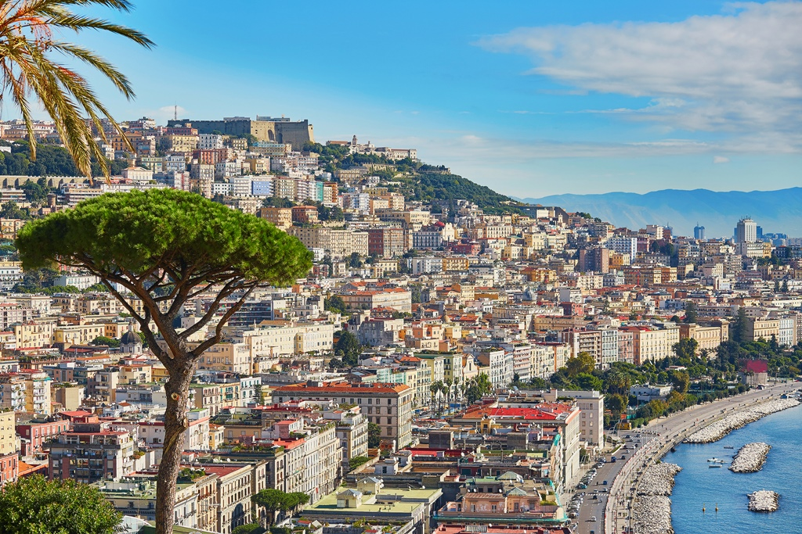

Napoli, vibrantul capital al regiunii Campania din Italia, este un oraș înmuiat în istorie, artă și tradiție culinară. De la originile sale antice ca colonie greacă până la splendoarea sa din Renaștere și vitalitatea contemporană, Napoli a captivat călătorii de secole cu amestecul său eclectic de comori arhitecturale, viață stradală aglomerată și bogat patrimoniu cultural.
Fondat ca Neápolis ("Oraș Nou") de coloniștii greci în secolul al VIII-lea î.Hr., Napoli a înflorit rapid ca un oraș port prosper și centru cultural în Magna Graecia. Sub stăpânirea romană, a devenit cunoscut sub numele de Neapolis și a servit ca un nod vital de comerț, comerț și activitate intelectuală. Siturile arheologice ale orașului, cum ar fi ruinele subterane ale orașului greco-roman și Muzeul Național Arheologic din Napoli, mărturisesc despre originile sale antice și semnificația sa istorică.
În Evul Mediu, Napoli a fost condus de diferite dinastii, inclusiv normanzii, angevinii și aragonezii, fiecare lăsând amprenta pe arhitectura, arta și cultura orașului. Renașterea a adus o perioadă de înflorire culturală, cu Napoli emergând ca un centru vibrant al umanismului, literaturii și artelor. Palatele, bisericile și palazzos-urile au fost decorate cu capodopere ale unor artiști renumiți precum Caravaggio, Titian și Raphael, îmbogățind peisajul cultural al Neapolelui.
În secolul al XVIII-lea, Napoli a devenit capitala Regatului Neapolelui și Siciliei, o monarhie puternică a Bourbonilor care a lăsat o amprentă durabilă asupra arhitecturii și culturii orașului. Palatul Regal din Napoli, cu interioarele sale opulente și grădinile sale extinse, stă mărturie a moștenirii regale a orașului.
Așezat pe insula Megaride, Castel dell'Ovo (Castelul Ovăzului) este unul dintre cele mai iconice puncte de reper ale Neapolelui. Legenda spune că poetul roman Virgil a plasat un ou magic în fundațiile castelului, protejând orașul de dezastru. Astăzi, castelul oferă vederi panoramice asupra golfului și găzduiește evenimente culturale și expoziții.
Considerat pe scară largă drept locul de naștere al pizzei, Napoli ia în serios tradițiile sale de fabricare a pizzei. Pizza neapolitană, caracterizată de crusta sa subțire, centrul moale și marginile bătute, este făcută cu ingrediente simple, dar de înaltă calitate, inclusiv roșii San Marzano, mozzarella de bivol și busuioc proaspăt. Pizzeriile precum Da Michele și Sorbillo servesc unele dintre cele mai bune pizza din lume, atrăgând localnici și turiști deopotrivă.
Cu proximitatea sa față de Marea Mediterană, Napoli se mândrește cu o abundanță de fructe de mare proaspete care ocupă un loc important în bucătăria sa. Specialități locale precum spaghetti alle vongole (spaghetti cu scoici), fritto misto di mare (fructe de mare prăjite mixte) și baccalà alla napoletana (cod sărat în stil neapolitan) evidențiază moștenirea maritimă și creativitatea culinară a orașului.